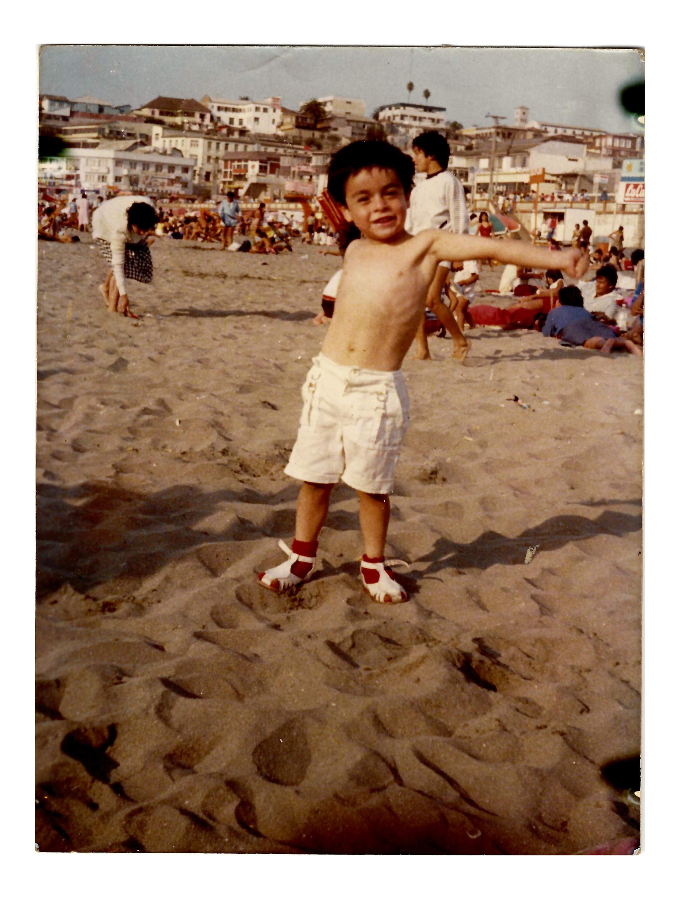

CV de Mauricio Osses
Fullstack Web Developer
10 años de experiencia en desarrollador web en el front end y backend
Educación
- Ingeniero en Informática
- 2007-2011. Instituto Profesional DUOC UC.
- Analista Programador Computacional
- 2007-2009. Instituto Profesional DUOC UC.
- Técnico en Operación y Programación de PC
- 1997-2000. Liceo Polivalente Guillermo Labarca Hubertson.

Experiencia Laboral
- ADMINISTRATIVO PRIMERO - 1er. Jdo. de Familia de San Miguel
- 2006-ACTUALMENTE. Funcionario Administrativo perteneciente a la Unidad de Sala, a cargo de la grabación de audiencias y redacción de actas.
- ADMINISTRATIVO SEGUNDO - Jdo. de Familia de Buin
- 2005-2006. Funcionario Administrativo perteneciente a la Unidad de Sala, a cargo de la grabación de audiencias y redacción de actas.
- Oficial Cuarto - 2do. Jdo. del Crimen de Puente Alto (Ex 3ro. de Letras)
- 2003-2005. Funcionario Administrativo perteneciente a la sección criminal, a cargo de la tramitación de causas de sumario, sección de alcoholes y faltas a la Ley de drogas.
Reconocimientos
- Ingeniero en Informática
- 2007-2011. Instituto Profesional DUOC UC
- Analista Programador Computacional
- 2007-2009. Instituto Profesional DUOC UC
- Técnico en Operación y Programación de PC
- 1997-2000. Liceo Polivalente Guillermo Labarca Hubertson
Información adicional
- cursos varios pjud
- cursos varios bases de datos
- cursos varios lenguajes de programación